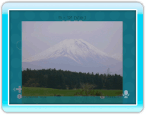

Si tienes fotos colocadas en el tablón de Wii o guardadas en una tarjeta SD, las puedes mostrar a los usuarios que estén hablando contigo.
14 |
Mostrar una foto |

Cuando los demás participantes la hayan recibido, la foto aparecerá en la pantalla de la sala (en la antesala no se verá).
|